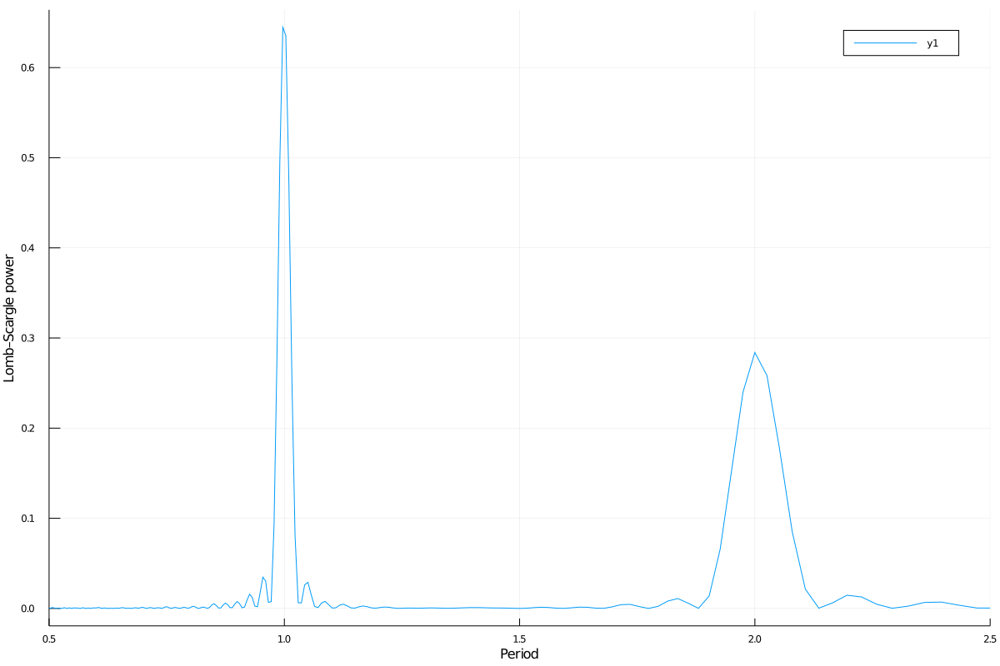
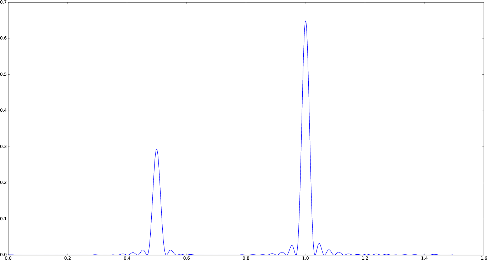

LombScargle.jl
Introduction
LombScargle.jl is a package for a fast multi-threaded estimation of the frequency spectrum of a periodic signal with the Lomb–Scargle periodogram. This is written in Julia, a modern high-level, high-performance dynamic programming language designed for technical computing.
Another Julia package that provides tools to perform spectral analysis of signals is DSP.jl, but its methods require that the signal has been sampled at equally spaced times. Instead, the Lomb–Scargle periodogram enables you to analyze unevenly sampled data as well, which is a fairly common case in astronomy, a field where this periodogram is widely used.
The algorithms used in this package are reported in the following papers:
- [PR89] Press, W. H., Rybicki, G. B. 1989, ApJ, 338, 277 (URL: http://dx.doi.org/10.1086/167197, Bibcode: http://adsabs.harvard.edu/abs/1989ApJ...338..277P)
- [TOW10] Townsend, R. H. D. 2010, ApJS, 191, 247 (URL: http://dx.doi.org/10.1088/0067-0049/191/2/247, Bibcode: http://adsabs.harvard.edu/abs/2010ApJS..191..247T)
- [ZK09] Zechmeister, M., Kürster, M. 2009, A&A, 496, 577 (URL: http://dx.doi.org/10.1051/0004-6361:200811296, Bibcode: http://adsabs.harvard.edu/abs/2009A%26A...496..577Z)
Other relevant papers are:
- [CMB99] Cumming, A., Marcy, G. W., & Butler, R. P. 1999, ApJ, 526, 890 (URL: http://dx.doi.org/10.1086/308020, Bibcode: http://adsabs.harvard.edu/abs/1999ApJ...526..890C)
- [CUM04] Cumming, A. 2004, MNRAS, 354, 1165 (URL: http://dx.doi.org/10.1111/j.1365-2966.2004.08275.x, Bibcode: http://adsabs.harvard.edu/abs/2004MNRAS.354.1165C)
- [HB86] Horne, J. H., & Baliunas, S. L. 1986, ApJ, 302, 757 (URL: http://dx.doi.org/10.1086/164037, Bibcode: http://adsabs.harvard.edu/abs/1986ApJ...302..757H)
- [LOM76] Lomb, N. R. 1976, Ap&SS, 39, 447 (URL: http://dx.doi.org/10.1007/BF00648343, Bibcode: http://adsabs.harvard.edu/abs/1976Ap%26SS..39..447L)
- [MHC93] Murdoch, K. A., Hearnshaw, J. B., & Clark, M. 1993, ApJ, 413, 349 (URL: http://dx.doi.org/10.1086/173003, Bibcode: http://adsabs.harvard.edu/abs/1993ApJ...413..349M)
- [SCA82] Scargle, J. D. 1982, ApJ, 263, 835 (URL: http://dx.doi.org/10.1086/160554, Bibcode: http://adsabs.harvard.edu/abs/1982ApJ...263..835S)
- [SS10] Sturrock, P. A., & Scargle, J. D. 2010, ApJ, 718, 527 (URL: http://dx.doi.org/10.1088/0004-637X/718/1/527, Bibcode: http://adsabs.harvard.edu/abs/2010ApJ...718..527S)
The package provides facilities to:
- compute the periodogram using different methods (with different speeds) and different normalizations. This is one of the fastest implementations of these methods available as free software. If Julia is run with more than one thread, computation is automatically multi-threaded, further speeding up calculations;
- access the frequency and period grid of the resulting periodogram, together with the power spectrum;
- find the maximum power in the periodogram and the frequency and period corresponding to the peak. All these queries can be restricted to a specified region, in order to search a local maximum, instead of the global one;
- calculate the probability that a peak arises from noise only (false-alarm probability) using analytic formulas, in order to assess the significance of the peak;
- perform bootstrap resamplings in order to compute the false-alarm probability with a statistical method;
- determine the best-fitting Lomb–Scargle model for the given data set at the given frequency.
Installation
LombScargle.jl is available for Julia 0.7 and later versions, and can be installed with Julia's built-in package manager. In a Julia session run the commands
julia> using Pkg
julia> Pkg.update()
julia> Pkg.add("LombScargle")Older versions are also available for Julia 0.4-0.6.
Usage
After installing the package, you can start using it with
using LombScargleThe module defines a new LombScargle.Periodogram data type, which, however, is not exported because you will most probably not need to directly manipulate such objects. This data type holds both the frequency and the power vectors of the periodogram.
The main function provided by the package is lombscargle:
LombScargle.lombscargle — Methodlombscargle(times::AbstractVector{<:Real}, signal::AbstractVector{<:Real},
[errors::AbstractVector{<:Real}]; keywords...)Compute the Lomb–Scargle periodogram of the signal vector, observed at times. You can also specify the uncertainties for each signal point with errors argument. All these vectors must have the same length.
All optional keywords are described in the docstring of LombScargle.plan.
If the signal has uncertainties, the signal vector can also be a vector of Measurement objects (from Measurements.jl package), in which case you don’t need to pass a separate errors vector for the uncertainties of the signal.
lombscargle returns a LombScargle.Periodogram. The only two mandatory arguments are:
times: the vector of observation timessignal: the vector of observations associated withtimes
The optional argument is:
errors: the uncertainties associated to eachsignalpoint.
All these vectors must have the same length.
You can pre-plan a periodogram with LombScargle.plan function, which has the same syntax as lombscargle described in this section. In this way the actual computation of the periodogram is faster and you will save memory. See the Planning the Periodogram section below.
LombScargle.jl exploits Julia's native multi-threading for the non-fast methods (the methods used when you set the keyword fast=false). Run Julia with $n$ threads (e.g., JULIA_NUM_THREADS=4 julia for 4 threads, if your machine has 4 physical cores) in order to automatically gain an $n$ -fold scaling.
Please note that multi-threading is still an experimental feature in Julia, so you may encounter issues when running it with more than one thread. For example, bug #17395 (if still open) may prevent the function, on some systems, from effectively scaling.
If the signal has uncertainties, the signal vector can also be a vector of Measurement objects (from Measurements.jl package), in which case you need not to pass a separate errors vector for the uncertainties of the signal. You can create arrays of Measurement objects with the measurement function, see Measurements.jl manual at https://juliaphysics.github.io/Measurements.jl/stable for more details. The generalised Lomb–Scargle periodogram by [ZK09] is always used when the signal has uncertainties, because the original Lomb–Scargle algorithm cannot handle them.
The uncertainties are only used in the generalised Lomb–Scargle algorithm to build an inverse-variance weights vector (see [ZK09]), that gives more importance to datapoints with lower uncertainties. The case where all measurements have the same uncertainty (a condition known as homoskedasticity) results in a constant weights vector, like if there are no uncertainties at all. If you have homoskedastic errors, you do not need to provide them to lombscargle.
Planning the Periodogram
In a manner similar to planning Fourier transforms with FFTW, it is possible to speed-up computation of the Lomb–Scargle periodogram by pre-planning it with LombScargle.plan function. It has the same syntax as lombscargle, which in the base case is:
LombScargle.plan — FunctionLombScargle.plan(times::AbstractVector{<:Real}, signal::AbstractVector{<:Real},
[errors::AbstractVector{<:Real}];
normalization::Symbol=:standard,
noise_level::Real=1,
center_data::Bool=true,
fit_mean::Bool=true,
fast::Bool=true,
flags::Integer=FFTW.ESTIMATE,
timelimit::Real=Inf,
oversampling::Integer=5,
padding_factors::Vector{Int}=[2],
Mfft::Integer=4,
samples_per_peak::Integer=5,
nyquist_factor::Integer=5,
minimum_frequency::Real=NaN,
maximum_frequency::Real=NaN,
frequencies::AbstractVector{Real}=
autofrequency(times,
samples_per_peak=samples_per_peak,
nyquist_factor=nyquist_factor,
minimum_frequency=minimum_frequency,
maximum_frequency=maximum_frequency))Pre-plan the Lomb–Scargle periodogram of the signal vector, observed at times. The periodogram can then be computed by passing the result of this function to lombscargle.
You can also specify the uncertainties for each signal point with errors argument. All these vectors must have the same length.
Optional keywords arguments are:
normalization: how to normalize the periodogram. Valid choices are::standard,:model,:log,:psd,:Scargle,:HorneBaliunas,:Cummingnoise_level: the noise level used to normalize the periodogram whennormalizationis set to:Scarglefit_mean: iftrue, fit for the mean of the signal using the Generalised Lomb–Scargle algorithm (see Zechmeister & Kürster paper below). If this isfalseand no uncertainty on the signal is provided, the original algorithm by Lomb and Scargle will be employed (see Townsend paper below)center_data: iftrue, subtract the weighted mean ofsignalfromsignalitself before performing the periodogram. This is especially important iffit_meanisfalsefrequencies: the frequecy grid (not angular frequencies) at which the periodogram will be computed, as a vector. If not provided, it is an evenly spaced grid of typeRange, automatically determined withLombScargle.autofrequencyfunction, which see. See below for other available keywords that can be used to affect the frequency grid without directly settingfrequencies
You can explicitely require to use or not the fast method by Press & Rybicki, overriding the default choice, by setting the fast keyword. In any case, frequencies must be a Range object (this is the default) in order to actually use this method. A few other keywords are available to adjust the settings of the periodogram when the fast method is used (otherwise they are ignored):
fast: whether to use the fast method.flags: this integer keyword is a bitwise-or of FFTW planner flags, defaulting toFFTW.ESTIMATE. PassingFFTW.MEASUREorFFTW.PATIENTwill instead spend several seconds (or more) benchmarking different possible FFT algorithms and picking the fastest one; see the FFTW manual for more information on planner flags.timelimit: specifies a rough upper bound on the allowed planning time, in seconds.oversampling: oversampling the frequency factor for the approximation; roughly the number of time samples across the highest-frequency sinusoid. This parameter contains the tradeoff between accuracy and speed.padding_factors: the FFT is performed on a vector with length equal to the smallest number larger than or equal toN * oversamplingwhich is a product of all numbers in this vector. E.g., usepadding_factors=[2]to perform the FFT on a vector padded to a power of 2, orpadding_factors=[2, 3, 5, 7]for the optimal size for the FFTW library.Mfft: the number of adjacent points to use in the FFT approximation.
In addition, you can use all optional keyword arguments of LombScargle.autofrequency function in order to tune the frequencies.
If the signal has uncertainties, the signal vector can also be a vector of Measurement objects (from Measurements.jl package), in which case you don’t need to pass a separate errors vector for the uncertainties of the signal.
LombScargle.autofrequency — Functionautofrequency(times::AbstractVector{Real};
samples_per_peak::Integer=5,
nyquist_factor::Integer=5,
minimum_frequency::Real=NaN,
maximum_frequency::Real=NaN)Determine a suitable frequency grid for the given vector of times.
Optional keyword arguments are:
samples_per_peak: the approximate number of desired samples across the typical peaknyquist_factor: the multiple of the average Nyquist frequency used to choose the maximum frequency ifmaximum_frequencyis not providedminimum_frequency: if specified, then use this minimum frequency rather than one chosen based on the size of the baselinemaximum_frequency: if specified, then use this maximum frequency rather than one chosen based on the average Nyquist frequency
This is based on prescription given at https://jakevdp.github.io/blog/2015/06/13/lomb-scargle-in-python/ and uses the same keywords names adopted in Astropy.
LombScargle.plan takes all the same argument as lombscargle shown above and returns a LombScargle.PeriodogramPlan object after having pre-computed certain quantities needed afterwards, and pre-allocated the memory for the periodogram. It is highly suggested to plan a periodogram before actually computing it, especially for the fast method. Once you plan a periodogram, you can pass the LombScargle.PeriodogramPlan to lombscargle as the only argument.
LombScargle.lombscargle — Methodlombscargle(plan::PeriodogramPlan)Compute the Lomb–Scargle periodogram for the given plan. This method has no other arguments. See documentation of LombScargle.plan for how to plan a Lomb–Scargle periodogram.
Planning the periodogram has a twofold advantage. First of all, the planning stage is type-unstable, because the type of the plan depends on the value of input parameters, and not on their types. Thus, separating the planning (inherently inefficient) from the actual computation of the periodogram (completely type-stable) makes overall computation faster than directly calling lombscargle. Secondly, the LombScargle.PeriodogramPlan bears the time vector, but the quantities that are pre-computed in planning stage do not actually depend on it. This is particularly useful if you want to calculate the False-Alarm Probability via bootstrapping with LombScargle.bootstrap: the vector time is randomly shuffled, but pre-computed quantities will remain the same, saving both time and memory in each iteration. In addition, you ensure that you will use the same options you used to compute the periodogram.
Fast Algorithm
When the frequency grid is evenly spaced, you can compute an approximate generalised Lomb–Scargle periodogram using a fast algorithm proposed by [PR89] that greatly speeds up calculations, as it scales as $O[N \log(M)]$ for $N$ data points and $M$ frequencies. For comparison, the true Lomb–Scargle periodogram has complexity $O[NM]$. The larger the number of datapoints, the more accurate the approximation.
This method internally performs a Fast Fourier Transform (FFT) to compute some quantities, but it is in no way equivalent to conventional Fourier periodogram analysis.
LombScargle.jl uses FFTW functions to compute the FFT. You can speed-up this task by using multi-threading: call FFTW.set_num_threads(n) to use $n$ threads. However, please note that the running time will not scale as $n$ because computation of the FFT is only a part of the algorithm.
The only prerequisite in order to be able to employ this fast method is to provide a frequencies vector as an AbstractRange object, which ensures that the frequency grid is perfectly evenly spaced. This is the default, since LombScargle.autofrequency returns an AbstractRange object.
In Julia, an AbstractRange object can be constructed for example with the range function (you specify the start of the range, and optionally the stop, the length and the step of the vector) or with the syntax start:[step:]stop (you specify the start and the end of the range, and optionally the linear step).
Since this fast method is accurate only for large datasets, it is enabled by default only if the number of output frequencies is larger than 200. You can override the default choice of using this method by setting the fast keyword to true or false. We recall that in any case, the frequencies vector must be a Range in order to use this method.
To summarize, provided that frequencies vector is an AbstractRange object, you can use the fast method:
- by default if the length of the output frequency grid is larger than 200 points
- in any case with the
fast=truekeyword
Setting fast=false always ensures you that this method will not be used, instead fast=true actually enables it only if frequencies is an AbstractRange.
Normalization
By default, the periodogram $p(f)$ is normalized so that it has values in the range $0 \leq p(f) \leq 1$, with $p = 0$ indicating no improvement of the fit and $p = 1$ a "perfect" fit (100% reduction of $\chi^2$ or $\chi^2 = 0$). This is the normalization suggested by [LOM76] and [ZK09], and corresponds to the :standard normalization in lombscargle function. [ZK09] wrote the formula for the power of the periodogram at frequency $f$ as
See the paper for details. The other normalizations for periodograms $P(f)$ are calculated from this one. In what follows, $N$ is the number of observations.
:model:\[P(f) = \frac{p(f)}{1 - p(f)}\]:log:\[P(f) = -\log(1 - p(f))\]:psd:\[P(f) = \frac{1}{2}\left[\frac{YC^2_{\tau}}{CC_{\tau}} + \frac{YS^2_{\tau}}{SS_{\tau}}\right] = p(f) \frac{YY}{2}\]:Scargle:\[P(f) = \frac{p(f)}{\text{noise level}}\]This normalization can be used when you know the noise level (expected from the a priori known noise variance or population variance), but this isn't usually the case. See [SCA82]
:HorneBaliunas:\[P(f) = \frac{N - 1}{2} p(f)\]This is like the
:Scarglenormalization, where the noise has been estimated for Gaussian noise to be $(N - 1)/2$. See [HB86]If the data contains a signal or if errors are under- or overestimated or if intrinsic variability is present, then $(N-1)/2$ may not be a good uncorrelated estimator for the noise level. [CMB99] suggested to estimate the noise level a posteriori with the residuals of the best fit and normalised the periodogram as:
\[P(f) = \frac{N - 3}{2} \frac{p(f)}{1 - p(f_{\text{best}})}\]This is the
:Cummingnormalization option
Access Frequency Grid and Power Spectrum of the Periodogram
lombscargle returns a LombScargle.Periodogram object, but you most probably want to use the frequency grid and the power spectrum. You can access these vectors with freq and power functions, just like in DSP.jl package. If you want to get the 2-tuple (freq(p), power(p)) use the freqpower function.
LombScargle.power — Functionpower(p::Periodogram)Return the power vector of Lomb–Scargle periodogram p.
LombScargle.freq — Functionfreq(p::Periodogram)Return the frequency vector of Lomb–Scargle periodogram p.
LombScargle.freqpower — Functionfreqpower(p::Periodogram)Return the 2-tuple (freq(p), power(p)), where freq(p) and power(p) are the frequency vector and the power vector of Lomb–Scargle periodogram p respectively.
Access Period Grid
The following utilities are the analogs of freq and freqpower, but relative to the periods instead of the frequencies. Thus period(p) returns the vector of periods in the periodogram, that is 1./freq(p), and periodpower(p) gives you the 2-tuple (period(p), power(p)).
LombScargle.period — Functionperiod(p::Periodogram)Return the period vector of Lomb–Scargle periodogram p. It is equal to 1 ./ freq(p).
LombScargle.periodpower — Functionperiodpower(p::Periodogram)Return the 2-tuple (period(p), power(p)), where period(p) and power(p) are the period vector and the power vector of Lomb–Scargle periodogram p respectively.
findmaxpower, findmaxfreq, and findmaxperiod Functions
Once you compute the periodogram, you usually want to know which are the frequencies or periods with highest power. To do this, you can use the findmaxfreq and findmaxperiod functions.
LombScargle.findmaxpower — Functionfindmaxpower(p::Periodogram)Return the highest power of the periodogram p.
LombScargle.findmaxfreq — Functionfindmaxfreq(p::Periodogram, [interval::AbstractVector{Real}], threshold::Real=findmaxpower(p))Return the array of frequencies with the highest power in the periodogram p. If a scalar real argument threshold is provided, return the frequencies with power larger than or equal to threshold. If you want to limit the search to a narrower frequency range, pass as second argument a vector with the extrema of the interval.
LombScargle.findmaxperiod — Functionfindmaxperiod(p::Periodogram, [interval::AbstractVector{Real}], threshold::Real=findmaxpower(p))Return the array of periods with the highest power in the periodogram p. If a scalar real argument threshold is provided, return the period with power larger than or equal to threshold. If you want to limit the search to a narrower period range, pass as second argument a vector with the extrema of the interval.
False-Alarm Probability
Noise in the data produce fluctuations in the periodogram that will present several local peaks, but not all of them related to real periodicities. The significance of the peaks can be tested by calculating the probability that its power can arise purely from noise. The higher the value of the power, the lower will be this probability.
[CMB99] showed that the different normalizations result in different probability functions. LombScargle.jl can calculate the probability (and the false-alarm probability) only for the normalizations reported by [ZK09], that are :standard, :Scargle, :HorneBaliunas, and :Cumming.
The probability $\text{Prob}(p > p_{0})$ that the periodogram power $p$ can exceed the value $p_{0}$ can be calculated with the prob function, whose first argument is the periodogram and the second one is the $p_{0}$ value. The function probinv is its inverse: it takes the probability as second argument and returns the corresponding $p_{0}$ value.
LombScargle.prob — Methodprob(P::Periodogram, pow::Real)Return the probability that the periodogram power can exceed the value pow.
Its inverse is the probinv function.
LombScargle.probinv — Methodprobinv(P::Periodogram, prob::Real)Return the power value of the periodogram power whose probability is prob.
This is the inverse of prob function.
LombScargle.M — FunctionLombScargle.M(P::Periodogram)Estimates the number of independent frequencies in the periodogram P.
LombScargle.fap — Methodfap(P::Periodogram, pow::Real)Return the false-alarm probability for periodogram P and power value pow.
Its inverse is the fapinv function.
LombScargle.fapinv — Methodfapinv(P::Periodogram, prob::Real)Return the power value of the periodogram whose false-alarm probability is prob.
This is the inverse of fap function.
Here are the probability functions for each normalization supported by LombScargle.jl:
:standard($p \in [0, 1]$):\[\text{Prob}(p > p_{0}) = (1 - p_{0})^{(N - 3)/2}\]:Scargle($p \in [0, \infty)$):\[\text{Prob}(p > p_{0}) = \exp(-p_{0})\]:HorneBaliunas($p \in [0, (N - 1)/2]$):\[\text{Prob}(p > p_{0}) = \left(1 - \frac{2p_{0}}{N - 1}\right)^{(N - 3)/2}\]:Cumming($p \in [0, \infty)$):\[\text{Prob}(p > p_{0}) = \left(1 + \frac{2p_{0}}{N - 3}\right)^{-(N - 3)/2}\]
As explained by [SS10], «the term "false-alarm probability denotes the probability that at least one out of $M$ independent power values in a prescribed search band of a power spectrum computed from a white-noise time series is expected to be as large as or larger than a given value». LombScargle.jl provides the fap function to calculate the false-alarm probability (FAP) of a given power in a periodogram. Its first argument is the periodogram, the second one is the value $p_{0}$ of the power of which you want to calculate the FAP. The function fap uses the formula
where $M$ is the number of independent frequencies estimated with $M = T \cdot \Delta f$, being $T$ the duration of the observations and $\Delta f$ the width of the frequency range in which the periodogram has been calculated (see [CUM04]). The function fapinv is the inverse of fap: it takes as second argument the value of the FAP and returns the corresponding value $p_{0}$ of the power.
The detection threshold $p_{0}$ is the periodogram power corresponding to some (small) value of $\text{FAP}$, i.e. the value of $p$ exceeded due to noise alone in only a small fraction $\text{FAP}$ of trials. An observed power larger than $p_{0}$ indicates that a signal is likely present (see [CUM04]).
Some authors stressed that this method to calculate the false-alarm probability is not completely reliable. A different approach to calculate the false-alarm probability is to perform Monte Carlo or bootstrap simulations in order to determine how often a certain power level $p_{0}$ is exceeded just by chance (see [CMB99], [CUM04], and [ZK09]). See the Bootstrapping section.
Bootstrapping
One of the possible and simplest statistical methods that you can use to measure the false-alarm probability and its inverse is bootstrapping (see section 4.2.2 of [MHC93]).
We emphasize that you can use this method only if you know your data points are independent and identically distributed, and they have white uncorrelated noise.
The recipe of the bootstrap method is very simple to implement:
- repeat the Lomb–Scargle analysis a large number $N$ of times on the original data, but with the signal (and errors, if present) vector randomly shuffled. As an alternative, shuffle only the time vector;
- out of all these simulations, store the powers of the highest peaks;
- in order to estimate the false-alarm probability of a given power, count how many times the highest peak of the simulations exceeds that power, as a fraction of $N$. If you instead want to find the inverse of the false-alarm probability $\text{prob}$, looks for the $N\cdot\text{prob}$-th element of the highest peaks vector sorted in descending order.
Remember to pass to lombscargle function the same options, if any, you used to compute the Lomb–Scargle periodogram before.
LombScargle.jl provides simple methods to perform such analysis. The LombScargle.bootstrap function allows you to create a bootstrap sample with N permutations of the original data.
LombScargle.bootstrap — FunctionLombScargle.bootstrap(N::Integer,
times::AbstractVector{Real},
signal::AbstractVector{Real},
errors::AbstractVector{Real}=ones(signal); ...)Create N bootstrap samples, perform the Lomb–Scargle analysis on them, and store all the highest peaks for each one in a LombScargle.Bootstrap object. All the arguments after N are passed around to lombscargle.
LombScargle.bootstrap(N::Integer, plan::PeriodogramPlan)Create N bootstrap samples, perform the Lomb–Scargle analysis on them for the given plan, and store all the highest peaks for each one in a LombScargle.Bootstrap object.
See documentation of LombScargle.plan for how to plan a Lomb–Scargle periodogram.
The false-alarm probability and its inverse can be calculated with fap and fapinv functions respectively. Their syntax is the same as the methods introduced above, but with a LombScargle.Bootstrap object as first argument, instead of the LombScargle.Periodogram one.
LombScargle.fap — Methodfap(b::Bootstrap, power::Real)Return the false-alarm probability for power in the bootstrap sample b.
Its inverse is the fapinv function.
LombScargle.fapinv — Methodfapinv(b::Bootstrap, prob::Real)Return the power value whose false-alarm probability is prob in the bootstrap sample b.
It returns NaN if the requested probability is too low and the power cannot be determined with the bootstrap sample b. In this case, you should enlarge your bootstrap sample so that N*fap can be rounded to an integer larger than or equal to 1.
This is the inverse of fap function.
LombScargle.model Function
For each frequency $f$ (and hence for the corresponding angular frequency $\omega = 2\pi f$) the Lomb–Scargle algorithm looks for the sinusoidal function of the type
that best fits the data. In the original Lomb–Scargle algorithm the offset $c$ is null (see [LOM76]). In order to find the best-fitting coefficients $a_f$, $b_f$, and $c_f$ for the given frequency $f$, without actually performing the periodogram, you can solve the linear system $\mathbf{A}x = \mathbf{y}$, where $\mathbf{A}$ is the matrix
$t = [t_1, \dots, t_n]^\text{T}$ is the column vector of observation times, $x$ is the column vector with the unknown coefficients
and $\textbf{y}$ is the column vector of the signal. The solution of the matrix gives the wanted coefficients.
This is what the LombScargle.model function does in order to return the best fitting Lomb–Scargle model for the given signal at the given frequency.
LombScargle.model — FunctionLombScargle.model(times::AbstractVector{Real},
signal::AbstractVector{R2},
[errors::AbstractVector{R3},]
frequency::Real,
[times_fit::AbstractVector{R4}];
center_data::Bool=true,
fit_mean::Bool=true)Return the best fitting Lomb–Scargle model for the given signal at the given frequency.
Mandatory arguments are:
times: the observation timessignal: the signal, sampled attimes(must have the same length astimes)frequency: the frequency at which to calculate the model
Optional arguments are:
errors: the vector of uncertainties of the signal. If provided, it must have the same length assignalandtimes, and be the third argument. Like forlombscargle, if the signal has uncertainties, thesignalvector can also be a vector ofMeasurementobjects, and this argument should be omittedtimes_fit: the vector of times at which the model will be calculated. It defaults totimes. If provided, it must come afterfrequency
Optional keyword arguments center_data and fit_mean have the same meaning as in lombscargle:
fit_mean: whether to fit for the mean. If this isfalse, like in the original Lomb–Scargle periodogram, $\mathbf{A}$ does not have the third column of ones, $c_f$ is set to $0$ and the unknown vector to be determined becomes $x = [a_f, b_f]^\text{T}$center_data: whether the data should be pre-centered before solving the linear system. This is particularly important iffit_mean=false
Examples
Here is an example of a noisy periodic signal ($\sin(\pi t) + 1.5\cos(2\pi t)$) sampled at unevenly spaced times.
julia> using LombScargle
julia> ntimes = 1001
1001
julia> t = range(0.01, stop = 10pi, length = ntimes) # Observation times
0.01:0.03140592653589793:31.41592653589793
julia> t += step(t)*rand(ntimes) # Randomize times
julia> s = sinpi.(t) .+ 1.5cospi.(2t) .+ rand(ntimes) # The signal
julia> plan = LombScargle.plan(t, s); # Pre-plan the periodogram
julia> pgram = lombscargle(plan) # Compute the periodogram
LombScargle.Periodogram{Float64,StepRangeLen{Float64,Base.TwicePrecision{Float64},Base.TwicePrecision{Float64}},Array{Float64,1}}([0.000472346, 0.000461633, 0.000440906, 0.000412717, 0.000383552, 0.000355828, 0.000289723, 0.000154585, 3.44734e-5, 5.94437e-7 … 3.15125e-5, 0.000487391, 0.0018939, 0.00367003, 0.00484181, 0.00495189, 0.00453233, 0.00480968, 0.00619657, 0.0074052], 0.003185690706734265:0.00637138141346853:79.72190993602499, [0.0295785, 0.0540516, 0.0780093, 0.122759, 0.15685, 0.192366, 0.206601, 0.252829, 0.265771, 0.315443 … 31.1512, 31.1758, 31.2195, 31.2342, 31.2752, 31.293, 31.3517, 31.3761, 31.4148, 31.4199], :standard)You can plot the result, for example with Plots package. Use freqpower function to get the frequency grid and the power of the periodogram as a 2-tuple.
using Plots
plot(freqpower(pgram)...)
You can also plot the power vs the period, instead of the frequency, with periodpower:
using Plots
plot(periodpower(pgram)...)
If you do not fit for the mean of the signal (fit_mean=false keyword to lombscargle function) without centering the data (center_data=false) you can get inaccurate results. For example, spurious peaks at low frequencies can appear and the real peaks lose power:
plot(freqpower(lombscargle(t, s, fit_mean=false, center_data=false))...)
You can tune the frequency grid with appropriate keywords to lombscargle function. For example, in order to increase the sampling increase samples_per_peak, and set maximum_frequency to lower values in order to narrow the frequency range:
plot(freqpower(lombscargle(t, s, samples_per_peak=20, maximum_frequency=1.5))...)
If you simply want to use your own frequency grid, directly set the frequencies keyword:
plot(freqpower(lombscargle(t, s, frequencies=0.001:1e-3:1.5))...)
Signal with Uncertainties
The generalised Lomb–Scargle periodogram is able to handle a signal with uncertainties, and they will be used as weights in the algorithm. The uncertainties can be passed either as the third optional argument errors to lombscargle or by providing this function with a signal vector of type Measurement (from Measurements.jl package).
using Measurements, Plots
ntimes = 1001
t = range(0.01, stop = 10pi, length = ntimes)
s = sinpi.(2t)
errors = rand(0.1:1e-3:4.0, ntimes)
# Run one of the two following equivalent commands
plot(freqpower(lombscargle(t, s, errors, maximum_frequency=1.5))...)
plot(freqpower(lombscargle(t, measurement(s, errors), maximum_frequency=1.5))...)
This is the plot of the power versus the period:
# Run one of the two following equivalent commands
plot(periodpower(lombscargle(t, s, errors, maximum_frequency=1.5))...)
plot(periodpower(lombscargle(t, measurement(s, errors), maximum_frequency=1.5))...)
We recall that the generalised Lomb–Scargle algorithm is used when the fit_mean optional keyword to lombscargle is true if no error is provided, instead it is always used if the signal has uncertainties.
Find Highest Power and Associated Frequencies and Periods
findmaxfreq function tells you the frequencies with the highest power in the periodogram (and you can get the period by taking its inverse):
julia> t = range(0, stop = 10, length = 1001);
julia> s = sinpi.(t);
julia> plan = LombScargle.plan(t, s); # Plan the periodogram
julia> p = lombscargle(plan);
julia> findmaxperiod(p) # Period with highest power
1-element Array{Float64,1}:
0.004987779939149084
julia> findmaxfreq(p) # Frequency with the highest power
1-element Array{Float64,1}:
200.49This peak is at high frequencies, very far from the expected value of the period of 2. In order to find the real peak, you can either narrow the ranges in order to exclude higher armonics
julia> findmaxperiod(p, [1, 10]) # Limit the search to periods in [1, 10]
1-element Array{Float64,1}:
2.04082
julia> findmaxfreq(p, [0.1, 1]) # Limit the search to frequencies in [0.1, 1]
1-element Array{Float64,1}:
0.49or pass the threshold argument to findmaxfreq or findmaxperiod. You can use findmaxpower to discover the highest power in the periodogram:
julia> findmaxpower(p)
0.9958310178312316
julia> findmaxperiod(p, 0.95)
10-element Array{Float64,1}:
2.04082
1.96078
0.0100513
0.0100492
0.00995124
0.00994926
0.00501278
0.00501228
0.00498778
0.00498728
julia> findmaxfreq(p, 0.95)
10-element Array{Float64,1}:
0.49
0.51
99.49
99.51
100.49
100.51
199.49
199.51
200.49
200.51The first peak is the real one, the other double peaks appear at higher armonics.
Usually, plotting the periodogram can give you a clue of what's going on.
Significance of the Peaks
The significance of the peaks in the Lomb–Scargle periodogram can be assessed by measuring the False-Alarm Probability. Analytic expressions of this quantity and its inverse can be obtained with the fap and fapinv functions, respectively.
julia> t = linspace(0.01, 20, samples_per_peak = 10)
julia> s = sinpi.(e.*t).^2 .- cos.(5t).^4
julia> plan = LombScargle.plan(t, s);
julia> p = lombscargle(plan)
# Find the false-alarm probability for the highest peak.
julia> fap(p, 0.3)
0.028198095962262748Thus, a peak with power $0.3$ has a probability of $0.028$ that it is due to noise only. A quantity that is often used is the inverse of the false-alarm probability as well: what is the minimum power whose false-alarm probability is lower than the given probability? For example, if you want to know the minimum power for which the false-alarm probability is at most $0.01$ you can use:
julia> fapinv(p, 0.01)
0.3304696923786712As we already noted, analytic expressions of the false-alarm probability and its inverse may not be reliable if your data does not satisfy specific assumptions. A better way to calculate this quantity is to use statistical methods. One of this is bootstrapping. In LombScargle.jl, you can use the function LombScargle.bootstrap to create a bootstrap sample and then you can calculate the false-alarm probability and its inverse using this sample.
When applying the bootstrap method you should use the same options you used to perform the periodogram on your data. Using the same periodogram plan you used to compute the periodogram will ensure that you use the same options. However, note that the fast method gives approximate results that for some frequencies may not be reliable (they can go outside the range $[0, 1]$ for the standard normalization). More robust results can be obtained with the fast = false option.
# Create a bootstrap sample with 10000
# resamplings of the original data, re-using the
# same periodogram plan. The larger the better.
# This may take some minutes.
julia> b = LombScargle.bootstrap(10000, plan)
# Calculate the false-alarm probability of a peak
# with power 0.3 using this bootstrap sample.
julia> fap(b, 0.3)
0.0209
# Calculate the lowest power that has probability
# less than 0.01 in this bootstrap sample.
julia> fapinv(b, 0.01)
0.3268290388848437If you query fapinv with a too low probability, the corresponding power cannot be determined and you will get NaN as result.
julia> fapinv(b, 1e-5)
NaNIf you want to find the power corresponding to a false-alarm probability of $\text{prob} = 10^{-5}$, you have to create a new bootstrap sample with $N$ resamplings so that $N\cdot\text{prob}$ can be rounded to an integer larger than or equal to one (for example $N = 10^{5}$).
Find the Best-Fitting Model
The LombScargle.model function can help you to test whether a certain frequency fits well your data.
using Plots
t = range(0.01, stop = 10pi, length = 1000) # Observation times
s = sinpi.(t) .+ 1.2cospi.(t) .+ 0.3rand(length(t)) # The noisy signal
# Pick-up the best frequency
f = findmaxfreq(lombscargle(t, s, maximum_frequency=10, samples_per_peak=20))[1]
t_fit = range(0, stop = 1, length = 50)
s_fit = LombScargle.model(t, s, f, t_fit/f) # Determine the model
scatter(mod.(t.*f, 1), s, lab="Phased data", title="Best Lomb-Scargle frequency: $f")
plot!(t_fit, s_fit, lab="Best-fitting model", linewidth=4)
If there are more than one dominant frequency you may need to consider more models. This task may require some work and patience. Plot the periodogram in order to find the best frequencies.
using Plots
t = range(0.01, stop = 5, length = 1000) # Observation times
s = sinpi.(2t) .+ 1.2cospi.(4t) .+ 0.3rand(length(t)) # Noisy signal
plan = LombScargle.plan(t, s, samples_per_peak=50)
p = lombscargle(plan)
# After plotting the periodogram, you discover
# that it has two prominent peaks around 1 and 2.
f1 = findmaxfreq(p, [0.8, 1.2])[1] # Get peak frequency around 1
f2 = findmaxfreq(p, [1.8, 2.2])[1] # Get peak frequency around 2
fit1 = LombScargle.model(t, s, f1) # Determine the first model
fit2 = LombScargle.model(t, s, f2) # Determine the second model
scatter(t, s, lab="Data", title="Best-fitting Lomb-Scargle model")
plot!(t, fit1 + fit2, lab="Best-fitting model", linewidth=4)
Performance
A pre-planned periodogram in LombScargle.jl computed in single thread mode with the fast method is more than 2 times faster than the implementation of the same algorithm provided by AstroPy, and more than 4 times faster if 4 FFTW threads are used (on machines with at least 4 physical CPUs).
The following plot shows a comparison between the times needed to compute a periodogram for a signal with N datapoints using LombScargle.jl, with 1 or 4 FFTW threads (with flags = FFTW.MEASURE for better performance), and the single-threaded Astropy implementation. (Julia version: 1.6.0; LombScargle.jl version: 1.0.0; Python version: 3.8.6; Astropy version: 4.1. CPU: Intel(R) Core(TM) i7-4870HQ CPU @ 2.50GHz.)

Note that this comparison is unfair, as Astropy doesn’t support pre-planning a periodogram nor multi-threading, and it pads vectors for FFT to a length which is a power of 2, while by default LombScargle.jl uses length which are multiples of 2, 3, 5, 7. A non-planned periodogram in single thread mode in LombScargle.jl is still twice as fast as Astropy.
Development
The package is developed at https://github.com/JuliaAstro/LombScargle.jl. There you can submit bug reports, make suggestions, and propose pull requests.
History
The ChangeLog of the package is available in NEWS.md file in top directory.
License
The LombScargle.jl package is licensed under the BSD 3-clause "New" or "Revised" License. The original author is Mosè Giordano.
Acknowledgements
This package adapts the implementation in Astropy of the the fast Lomb–Scargle method by [PR89]. We claim no endorsement nor promotion by the Astropy Team.